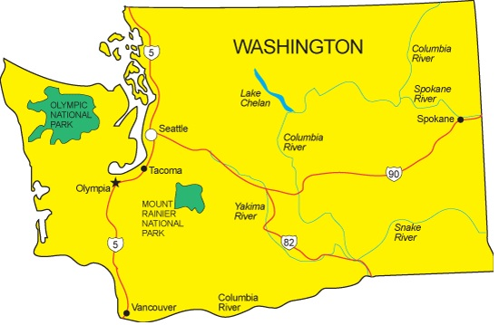

The Evergreen State
Washington is known for forests, rain, and technology centers like Seattle.
Highlights
- Space Needle
- Mount Rainier
- Pike Place Market

Washington, known as the "Evergreen State" and "State of Love and Trust," became the 42nd state on November 11, 1889. It has a population of about 7.6 million people and is the 13th most populous state. The capital is Olympia, and it is bordered by Oregon and Idaho. Washington covers 71,362 square miles, making it the 18th largest state.
People have lived in Washington for at least 13,000 years, with the first settlers likely crossing the Bering Strait from Russia. Before Europeans arrived, over 125 Native American tribes lived in the region, each with its own lifestyle, from hunting and foraging to fishing along the coast.
The first Europeans to explore Washington were the Spanish, arriving in the 1770s, followed by British explorers like Captain James Cook. This led to a disagreement over who owned the region, which almost resulted in war. In 1805, Lewis and Clark explored Washington and claimed it for the U.S.
Washington was named after President George Washington and became a state in 1889. It was the first state in the 20th century to grant women the right to vote in 1910. The state also experienced the largest volcanic eruption in U.S. history in 1980 when Mount St. Helens erupted, causing massive destruction.
Seattle is home to the first Starbucks, opened in 1971, and Washington is also where Jeff Bezos founded Amazon in a garage. The state is known for its forests, with more than half of its land covered in trees, mostly on the western side.
A fun fact: Washington has the world’s first squirrel bridge in Longview, built to help squirrels cross a busy road safely. Overall, Washington balances its beautiful natural landscapes with innovation, making it one of the most interesting states in the U.S.
Explore: Washington Facts